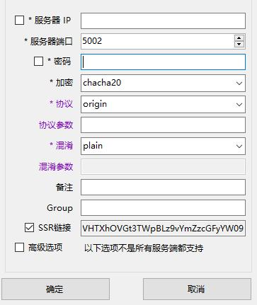
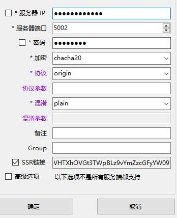
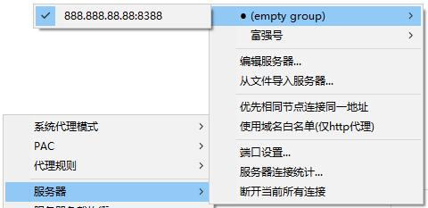
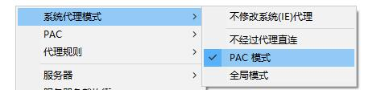

Windows Guide
Windows Guide
1.First download the Shadowsocks for Windows here
2.Download from inside Shadowsocks-win-2.5.6.zip Unzip and run Shadowsocks.exe this program
3.According to Victor provided account information, fill in the server address (IP or domain name), port, encryption and password, click OK after completion
4.Right-click the paper tray icon in the lower left corner of the taskbar and select the server
5.In the system proxy mode which can choose the work mode, there are three modes, without the agent, PAC mode (intelligent shunt), the global model (all sites through the agent)
